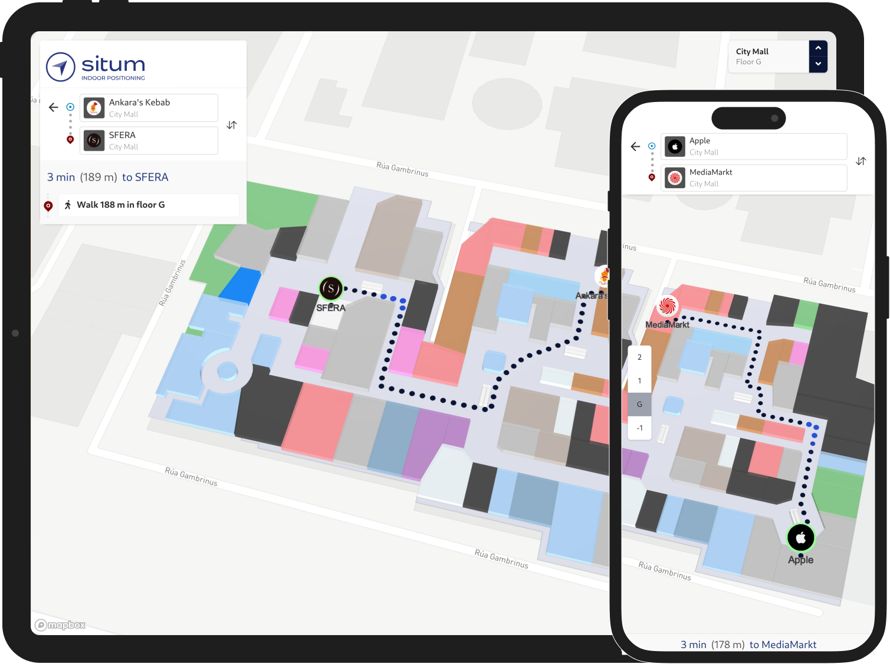

@situm/react-native

@situm/react-native
Set of utilities that allow any developer to build React Native location based apps using Situm's indoor positioning system.


Introduction
Situm React Native Plugin is a set of utilities that allow any developer to build React Native location based apps using Situm's indoor positioning system.
This plugin has two parts:
The base SDK, the building blocks that allow you to:
- obtain information related to buildings where Situm's positioning system is already configured: floorplans, points of interest, geotriggered events, etc.
- retrieve the location of the smartphone inside these buildings (position, orientation, and floor where the smartphone is).
- compute a route from a point A (e.g. where the smartphone is) to a point B (e.g. any point of interest within the building).
- trigger notifications when the user enters a certain area.
A full featured and easy to integrate React Native component that allows you to:
- show your cartography on a map
- show the user location on the map
- calculate point-to-point wayfinging routes
- explore points of interest on your buildings on the map


Getting started
There is a comprehensive tutorial on how to set-up a new application using this plugin on the Situm documentation page.
Below you will find the basic steps to install and configure the plugin on your React Native project. These steps have already been done for you in the example application of this repository, but they are required for other projects.
Running the example
Check the example/README file of this repository to create your first React Native application using Situm React Native. In this example app you will find example screens for each method the plugin exposes.
Configure the plugin on your React Native project
Install the plugin
Firstly you need to setup react-native development environment. To get started please follow instructions under section React Native CLI Quickstart on this guide.
To add the Situm dependency to your React Native project, you can use the yarn or npm command. To add this dependency to your project, you can use the following command in your terminal:
yarn add @situm/react-native react-native-webview react-native-permissions
#OR
npm install --save @situm/react-native react-native-webview react-native-permissions
Set up your Situm credentials
Create a new situm.tsx file with your Situm credentials. You can use the contents of example/src/situm.tsx as example.
Follow the Wayfinding guide if you haven't set up a Situm account.
Android
- Add the
ACCESS_FINE_LOCATIONpermission to yourAndroidManifest.xmlfile if you have configured Situm SDK to use GPS:
<uses-permission android:name="android.permission.ACCESS_FINE_LOCATION" />
- Set the
minSdkVersionto 21 or later on your app'sbuild.gradlefile.
iOS
- Add depedency in
PodFile
target 'YourApp' do
pod 'ReactNativeSitumPlugin', :path => '../node_modules/@situm/react-native/ReactNativeSitumPlugin.podspec'
end
You may need to add a Header Search Path: (screenshot)
$(SRCROOT)/../node_modules/@situm/react-native/lib/ios
- Declare the following permissions in your app's
Info.plistfile to successfully start positioning:
<key>NSLocationWhenInUseUsageDescription</key>
<string>Location is required to find out where you are</string>
<key>NSLocationAlwaysAndWhenInUseUsageDescription</key>
<string>Location is required to find out where you are</string>
<key>NSMotionUsageDescription</key>
<string>We use your phone sensors (giroscope, accelerometer and altimeter) to improve location quality</string>
- For offline support you will have to add the underlying web application's domain inside the entry
WKAppBoundDomainsonInfo.plistas follows:
<key>WKAppBoundDomains</key>
<array>
<string>map-viewer.situm.com</string>
</array>
Migrate from the old Situm React Native Wayfinding plugin
The new Situm React Native package breaks compatibility with the previous Situm React Native Wayfinding plugin. Integrating the new version is simpler and more straightforward. If you want to migrate your application, follow the steps described in the Situm documentation.
Development
Run the tests
yarn test
Situm-React-Native-Plugin is licensed under MIT License
Build the library
yarn run prepare
This will also generate the docs (see next section). More info is available at our Developers Page.
Build the documentation
yarn run doc
Docs will be available in the docs/ folder.
Release version
yarn run prepare
npm pack
npm publish
or for beta channel
npm publish --tag beta
Versioning
Please refer to CHANGELOG.md for a list of notable changes for each version of the plugin.
You can also see the tags on this repository.
Submitting contributions
You will need to sign a Contributor License Agreement (CLA) before making a submission. Learn more here.
License
This project is licensed under the MIT - see the LICENSE file for further details.
More information
More info is available at our Developers Page.
Support information
For any question or bug report, please send an email to support@situm.es